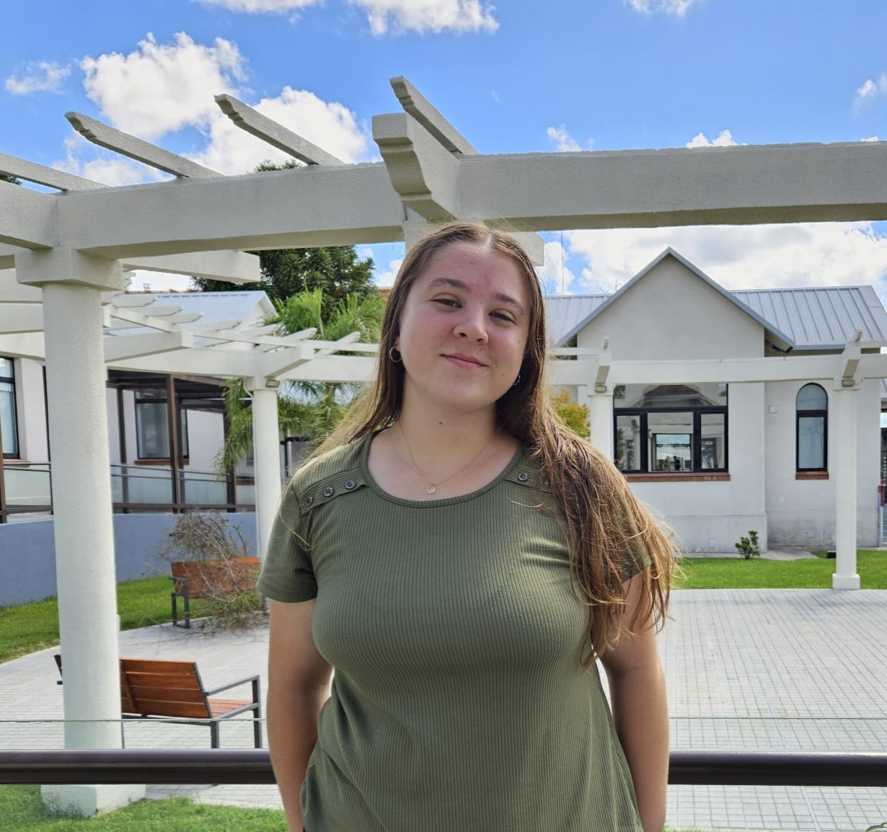

Mi nombre es Paula y estoy aprendiendo Desarrollo Web

En esta página encontrarás información sobre mí, mis estudios y mi experiencia hasta el momento.
Sobre mí:
Tengo 23 años, nací y aún vivo en la ciudad de Durazno, departamento de Durazno.
Me gusta la música, la pintura y las series.
Mis estudios:
- Estoy estudiando Ingeniería Agroambiental en UTEC, donde inicié mi camino en la programación. Aprendí varios lenguajes
de programación como C++, Python y R, aunque el uso es muy orientado a la carrea.
- También estoy estudiando Desarrollo Web en el curso Jóvenes a Programar de Ceibal, donde trabajamos con HTML.
Mi experiencia:
- Aún no tengo experiencia laboral en el campo IT.
- Trabajé como docente de Inglés, gracias a la amplia experiencia y años de estudio que tengo en la asignatura, así como dando
clases particulares.
- Actualmente estoy trabajando en el área de Comunicación y Difusión de UTEC, donde he logrado adquirir muchas competencias
transversales que considero de suma importancia para mi futuro profesional; tales como comunicación efectiva,
gestión del tiempo, resolución de conflictos y adaptabilidad a nuevos desafíos.
Contacto:
Whatsapp